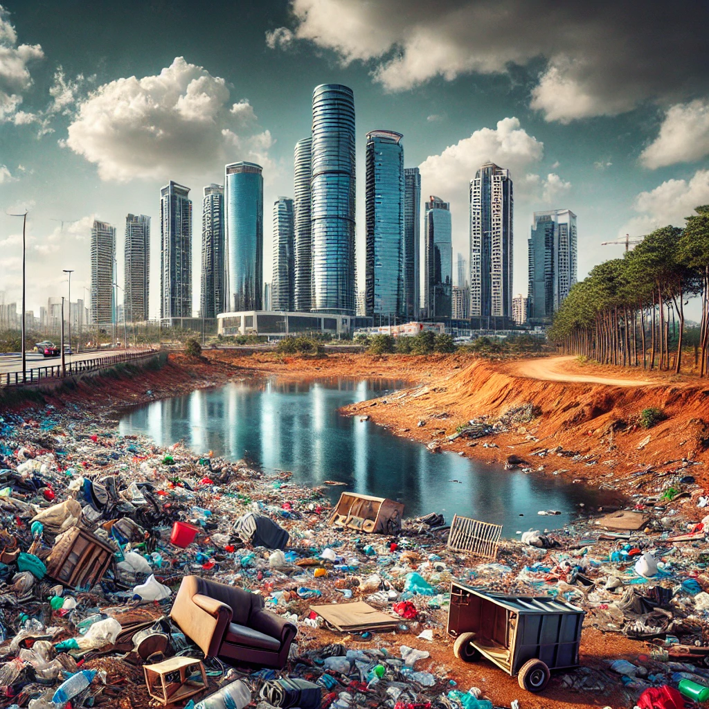

Welcome to Re-Gen-AI
Transforming Abandoned Lands into Sustainable Spaces
Our platform harnesses the power of AI and biotechnology to identify, analyze, and restore brownfield sites—abandoned or contaminated lands that pose environmental and economic challenges. By utilizing advanced soil assessment technologies, AI-driven remediation strategies, and sustainable ecological solutions, we convert these neglected spaces into thriving green hubs, urban farms, or renewable energy sites.
